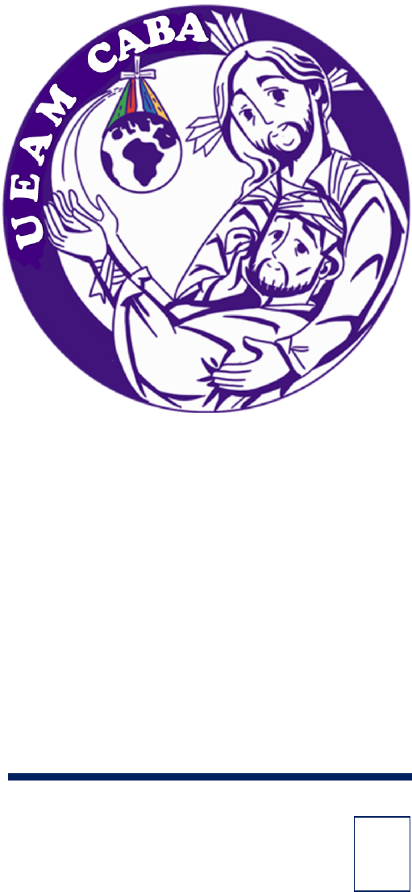

Unión
de Enfermos
y Ancianos
Misioneros
Ciudad de Buenos Aires
República Argentina
1
U E A M
La Unión de Enfermos y Ancianos Misioneros es una obra misionera de la Iglesia Católica, promovida actualmente por el mismo Papa desde la
Obras Misionales Pontificias, destinada a conjuntar la unión espiritual y humana de todos aquellos que, unidos en la misma fe, deciden unirse a la misma
entrega que Jesús hiciera al ofrecer su vida, por Amor a Dios y a toda la creación, con especial atención a los sufrientes, personas que por estar padeciendo
las molestias y limitaciones que ocasiona en ellos la enfermedad, o por estar transitando la etapa de la ancianidad, se ven impedidos a seguir ejerciendo
las tareas misioneras y pastorales que antes realizaban, en las formas y estilos propios con que las llevaban a cabo.
Por ello, deciden libremente adherirse a la Persona de Jesús, consagrando sus propias vidas, con sus padecimientos y limitaciones, para unidos a
Él, ofrecer a Dios los que les toca vivir, para bien de todos los cristianos, de todos los seres humanos y para bien especialmente de todos los que les toca
sufrir lo que a ellos mismos le aqueja, promoviendo en los sufrientes, el descubrimiento y la revelación de un nuevo sentido de sus vidas, para introducirse
más intensamente en el mismo Amor de Dios, fuente y culmen de toda misión, pastoral y vocación cristiana.
La UEAM es la unión de todos los cristianos que, desde hace 2000 años, se mancomunan en el mismo proyecto de Jesús, para la salvación de
todo el género humano.
Fue el mismo Jesús, quien cuando nos invitó a ser sus hermanos y amigos, nos pidió servir a los demás como Él mismo nos sirvió, y nos encomendó
la misión de hacer en su memoria lo mismo que Él hizo por nosotros: entregar la Vida por Amor.
Desde ese momento, todo el que se adhiere a Jesús y acepta su misión, se hace uno con Él y en su Espíritu se hace uno con el Padre, formando
así un solo cuerpo en Jesús, siendo cada uno de nosotros un miembro indispensable y necesario para la salvación de todos. Obviamente siempre unidos
a Jesús.
Así nació esta unión que está íntimamente ligada a la Comunión de los Santos, proclamada solemnemente en cada credo recitado en nuestras
Eucaristías.
Impresionante saberse unido a todos los santos y con ellos a la misma Virgen María.
Más impresionante saberse unido a Dios en esta misión de construcción de su Reino y de la misma Vida Eterna de la que ya participamos desde
aquí, uniéndonos a Jesús que entrega su vida por todos nosotros.
Esta gran Unión, o esta gran Comunión de los Santos, es la que invisiblemente obra a lo largo de la historia, en la entrega callada y humilde de
tantas personas que sufren y aún desde su dolor ofrecen su amor para la salvación de todos sin distinción.
Es desde esta gran y misteriosa Unión,
que muchos de los que conocemos como Santos, han obrado en sus propias vidas, la oblación, la entrega amorosa y paciente, callada y sencilla de sus
propias vidas, para bien de las personas que los rodeaban, e incluso por aquellos que nunca conocieron.

Así, por ejemplo, San Francisco Javier, se animó a llevar el Evangelio a zonas nunca exploradas por la Iglesia, hasta incluso dejando su vida por
cansancio de amor para aquellos que nunca llegó a conocer, pero a quienes quiso llevarles a Jesús.
O la misma Teresa de Lisieux, quien sin nunca salir del convento carmelita, llego con su alma misionera a sitios a los que nunca su cuerpo terrenal
alcanzó, pero sin embargo, no hubo sufrimiento que padeciera, que no lo ofreciera con inmenso amor por aquellos que a miles de kilómetros de ella,
anunciaban a Jesús.
Así fue como también una laica francesa con gran devoción mariana e inspirada entre otros en la misma Teresita, encontró en el sacrificio por amor
una empresa que vale la pena realizar, a pesar de la propia enfermedad y limitación que la aquejaba, pero que no le impidió ofrecer sus propias
imposibilidades para que otros puedan lo que ella no. Aunque sin saberlo, ofreciéndose a sí misma, procuró el bien de Dios para muchos que nunca llegó
a conocer, vinculándose íntimamente a ellos por la oración, la entrega y el amor.
Margarita Godet, inició así en la tercera década del siglo XX, la Unión de Enfermos Misioneros de Francia, la cual llega a nuestros días en la
Argentina como la UEAM.
La realidad VS. mi realidad
Tu realidad personal es la única que puedes cambiar rápidamente, es por esto que la invitación es: observa eso que te está generando
molestia, eso que te genera algún enfado ocasional, eso que te quita la paz. Hace parte de la realidad del mundo? Puedes tú hacer algo para
que eso cambie ahora? Si la respuesta es NO. Entonces suelta esa realidad y entrégala a Dios que seguro el sí sabrá que hacer y cómo actuar
ante eso que no está bien.
Ahora si eso que te molesta o quita la paz hace parte de tu realidad personal, empieza a pensar qué puedes hacer en este preciso momento
para cambiar esa realidad, hablar, estar en silencio, cambiar mi pensamiento, tomar alguna acción determinada y veras que será mucho más
fácil transitar esa tu realidad si te responsabilizas de ella haciendo algo concreto, pues así como tú no podrás cambiar en un instante la
realidad del mundo (hambre, desigualdad social, pobreza, guerra, malos gobiernos, crisis económicas etc.) así tampoco nadie excepto tu podrán
cambiar tu realidad personal .
Si leemos detenidamente la historia de vida de las personas que hemos citado en estos textos y que hoy hacen parte importante y fundamental
de la historia de la UEAM, veremos que ellos se hicieron responsables de su realidad y poco a poco eso sirvió grandemente para que la realidad
de tantas personas dolientes fuera cambiando un poco y teniendo un sentido más trascendente.
Margarita Godet, 1899-1932, Francia.